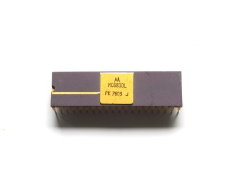

A while ago I got a huge amount of old Chips, including a Ceramic MC6800 CPU. I wanted to build a Computer around this nice looking Chip and decided to recreate the D.R.E.A.M. 6800, published in the magazine "Electronics Australia" in 1979 and dsigned by Michael Bauer.
